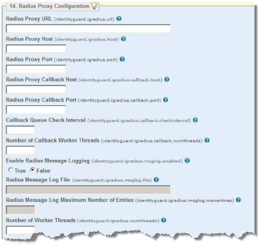

|
IdentityGuard Server 12.0 Administration Guide |
|
IdentityGuard Server 12.0 Administration Guide |
Use the Properties Editor to create or modify a Radius proxy configuration. Through the Properties Editor you also have access to any Radius proxy properties set during installation.
2. On the Table of Contents, click Radius Proxy Configuration.

3. In the Radius Proxy URL field, type the URL of the Entrust IdentityGuard server where the Radius proxy is running.
As a default, Entrust IdentityGuard uses the value of the Authentication service URL as set in the Configuration Panel.
4. In the Radius Proxy Host field, enter the host name of the computer that Entrust IdentityGuard Radius proxy uses as its host when listening for incoming requests. Normally this value should only be set if the Entrust IdentityGuard host has multiple IP addresses and you want to use a non-default IP address as the host address of Entrust IdentityGuard Radius.
5. In the Radius Proxy Port field, type a space-separated list of ports used by the Radius proxy. Each port value must be an integer between 1024 and 65535. The default is 1812.
Note: If you plan to associate different VPN server groups with separate Radius proxy ports, enter all applicable ports here separated by spaces, then configure your VPN servers on the VPN Server Configuration pane. There can be only one VPN server defined for each port.
6. If you are using the transaction verification capability of mobile soft tokens for second-factor authentication (see To configure VPN connections, Step 33), configure the following properties:
● Radius Proxy Callback Host – Enter the name or IP address of the host of the Entrust IdentityGuard Radius proxy that handles callbacks from Entrust IdentityGuard when it receives responses to mobile authentication challenges. If no host is specified, the local host name is used.
● Radius Proxy Callback Port – Enter the port number that the Radius Proxy Callback Host should use. If no port is specified, a random port is used.
● Callback Queue Check Interval – Enter the interval, in seconds, between checks for expired entries in the callback queue. The acceptable values are from 2 to 10.
● Number of Callback Worker Threads – Enter the number of threads that the Entrust IdentityGuard Radius Proxy should use to process callback requests from Entrust IdentityGuard. Each thread has its own connection to Entrust IdentityGuard. The default is 5.
7. Configure the following logging properties:
● Enable Radius Message Logging– Set to True to write Radius messages to a log file.
● Radius Message Log File – If you set Enable Radius Message Logging to True, enter a file name for the Radius messages log file.
If you do not enter a file name, no Radius messages are logged. If you do not specify a file path, the log file is created in the Entrust IdentityGuard installation directory.
8. To have Entrust IdentityGuard create a new log file when the current log file reaches a specified threshold (approximately), enter a threshold number of messages in the Radius Message Log Maximum Number of Entries field.
9. In the Number of Worker Threads field, enter the number of worker threads that the Radius proxy uses to process incoming requests. The default is 5.
10. In the Connection to Entrust IdentityGuard Timeout field, enter the amount of time (in milliseconds) that a request should wait for a response from Entrust IdentityGuard before the connection times out. If 0, connections never timeout. The default is 0.
11. In the Maximum Message Queue Time field, enter the amount of time (in milliseconds) that a request to the Radius proxy can be queued. If the request is queued longer than the specified time, the Radius proxy ignores the request. The default is 10000.
It is recommended that you set the value lower than the connection timeout used by the VPN server that calls the Entrust IdentityGuard Radius proxy.
12. In the Maximum Message Queue Size field, enter the maximum number of requests to the Radius proxy that can be queued. The default is 100.
When the queue becomes full, the Radius proxy removes the oldest queued requests when new requests are processed.
13. Click Validate & Save.
14. Log out of the Properties Editor and restart Entrust IdentityGuard and the Radius proxy once you make all property changes.
The Entrust IdentityGuard Radius proxy is now configured for use with your VPN server.

 Windows
Windows